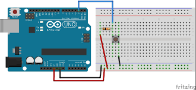

Master digital inputs, pull-down resistors, and if/else logic to control an LED.
1. Concept and Description
Now that we can control outputs, let's learn how to read inputs! In this project, we will use a push button to turn an LED on and off. This introduces the concept of **Digital Input** (reading if a voltage is present or not) and the **if/else** control structure in programming. We will also learn about "floating inputs" and why we need a **Pull-Down Resistor** to keep the signal stable when the button isn't pressed.
2. Components Needed
(1) Arduino Uno
(1) Push Button (Tactile Switch)
(1) LED
(1) 220 $\Omega$ Resistor (for the LED)
(1) 10k $\Omega$ Resistor (Brown-Black-Orange) - This is the Pull-Down Resistor
(1) Breadboard
Jumper Wires
3. Physical Montage (Wiring Instructions)
Follow these steps carefully to wire your circuit.
LED Setup: Connect the LED and 220 $\Omega$ resistor to **Pin 13** just like in the previous project (Long leg to Pin 13, Short leg to Resistor -> GND).
Place the Button: Insert the push button into the breadboard so it straddles the middle gap.
Power the Button: Connect one leg of the button directly to the **5V** pin on the Arduino.
Connect the Signal: Connect the *diagonal* opposite leg of the button to **Digital Pin 2**.
Add the Pull-Down Resistor: Connect the same leg you just connected to Pin 2 to one end of the 10k $\Omega$ resistor. Connect the other end of the 10k $\Omega$ resistor to **GND**. Why? This ensures that when the button is open, Pin 2 reads "LOW" (0V) instead of random static electricity.

4. The Code (Arduino Sketch)
The code reads the state of the digital input (Pin 2). If it's HIGH (button pressed), the LED turns on; otherwise, it's off.
/* * Project #6: Simple Push Button Input
* Reads a digital input (HIGH/LOW) to control a digital output.
*/// Define the pins used:constintbuttonPin = 2; // The number of the pushbutton input pinconstintledPin = 13; // The number of the LED output pin// Variable to store the current button state (HIGH or LOW)intbuttonState = 0;
voidsetup() {
// Initialize the LED pin as an output:pinMode(ledPin, OUTPUT);
// Initialize the pushbutton pin as an input:pinMode(buttonPin, INPUT);
}
voidloop() {
// Read the state of the pushbutton value:buttonState = digitalRead(buttonPin);
// Check if the pushbutton is pressed.// If it is, the buttonState is HIGH:if (buttonState == HIGH) {
// Turn LED on:digitalWrite(ledPin, HIGH);
} else {
// Turn LED off:digitalWrite(ledPin, LOW);
}
}